Part C：专题内容方块 — 外部因素
按周次聚合同一主题在不同周报中的原文、原图与 mkk 评语。
C14. 跨游戏对比
追踪范围：W8 → W9, W24 | 当前状态：W24 年末对比
W8 原文（2024.09.02-09.08）
受开学季影响，各游戏周活和留存率均有所下滑。
小镇 前周留存率为66％，上周下降至60％，环比下降6％，周活下降27％；玩家的活跃时间集中在周末，周末活跃人数占比达74%，环比上升12％。
香肠与小镇的玩家群体相似（均为学生），受开学影响较为明显。周留存率下降14％，周活下降32％；周末活跃人数占比达77%，环比上升16％
麦芬由于用户画像的差异，受此影响较小。留存率仅下降了1％，周活下降7％；周末活跃人数占比达81％，环比上升2％
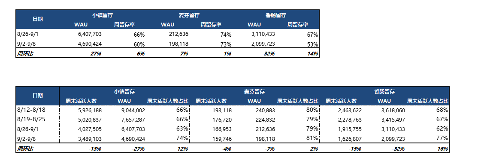
📎 原文：第八周周报
W9 原文（2024.09.09-09.15）
中秋调休，留存有所回升。
小镇 前周留存率为60％，上周上升至68％，环比上升8％，周活下降11％；玩家的活跃时间集中在周末，周末活跃人数占比达78%，环比上升4％。
香肠与小镇的玩家群体相似（均为学生），受开学影响较为明显。周留存率上升11％，周活下降8％；周末活跃人数占比达84%，环比上升6％
麦芬由于用户画像的差异，受此影响较小。留存率仅上升了2％，周活下降8％；周末活跃人数占比达80％，环比不变。
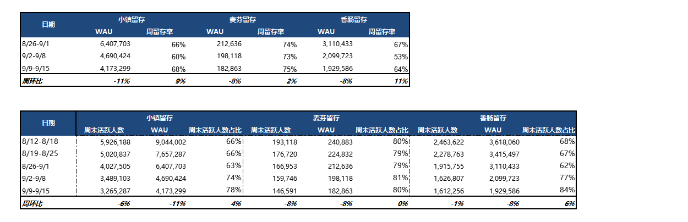
📎 原文：第九周周报
📌 mkk 评语
跨游戏对比明确验证了小镇的用户画像——以学生为主的年轻群体，对学期/假期节奏高度敏感。开学季小镇/香肠受影响最大（WAU -11%/-8%），麦芬几乎不受影响。中秋调休对学生群体有正向影响。这决定了运营节奏必须围绕学生日历来排期。
W24 原文（2024.12.23-12.29）— 年末周活对比
年末周，小镇与其他项目周活跃趋势都是稍有降低，属正常现象。麦芬 -2%，小镇 -5%，火炬 -6%
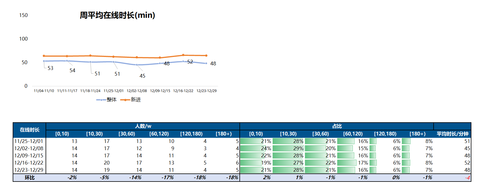
📎 原文：第二十四周周报
C15. 工作日 vs 周末回流模式
追踪范围：W9（一次性分析） | 当前状态：W9 后未再出现
W9 原文（2024.09.09-09.15）
相比于假期，小镇工作日的活跃度上升
整体回流人数显著上升。回流人数中，于工作日回流的人数占比为65％（+2%），周末回流的占比35%（-2%）
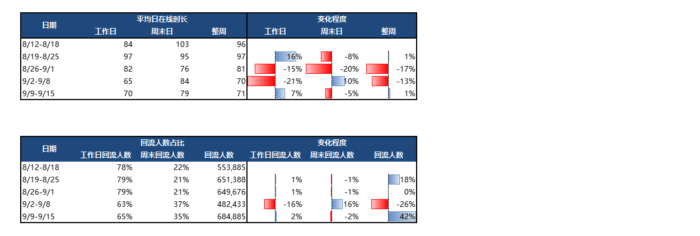
📎 原文：第九周周报
📌 mkk 评语
工作日回流占 65%，打破了"只有周末才回流"的假设。可能与中秋调休有关，但说明回流时机不完全受周末驱动，特殊日历事件也能触发回流，可作为运营推送时机参考。
C16. 竞品监测
追踪范围：W15, W21 | 当前状态：W21 竞品上线影响
W15 原文（2024.10.21-10.27）
10.24 米姆米姆开启哈测，对小镇活跃影响不大（原文一句话带过）
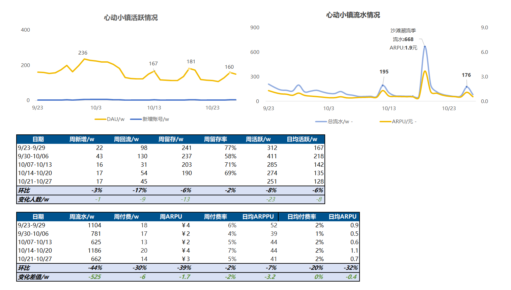
📎 原文：第十五周周报
W21 原文（2024.12.02-12.08）
12.05 竞品上线，日均时长受影响较大，DAU 受影响较小。从上周三开始，日均在线时长比原趋势 -6min，DAU 比原趋势 -5w
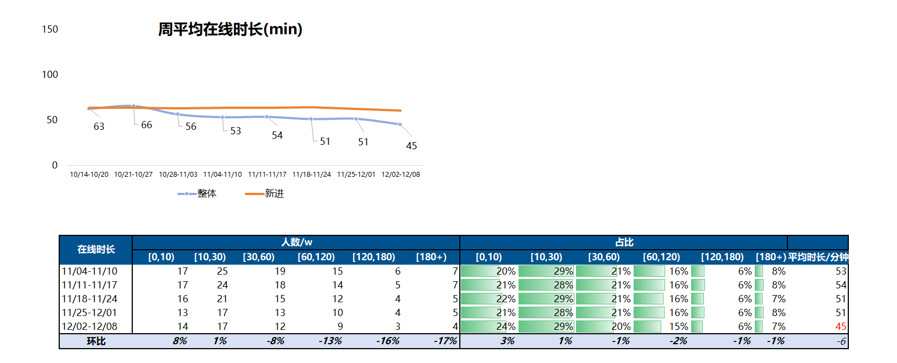
📎 原文：第二十一周周报
📌 mkk 评语
两次竞品事件对比：W15 米姆米姆哈测几乎无影响，W21 竞品上线则明显分流——时长 -6min，DAU -5w。差异可能在于竞品品类（同品类 vs 不同品类）和上线规模。时长比 DAU 更敏感，说明竞品先抢走的是"边缘时间"而非"核心用户"。
C20. 烟花 & 跨年活跃事件
追踪范围：W24 → W25（2 期） | 当前状态：事件结束
W24 原文（2024.12.23-12.29）
12.31 日 24 点场烟花约带来 7w 以上实时在线的提升；1.1 日晚 8 点场烟花带来约 3w 实时在线的提升
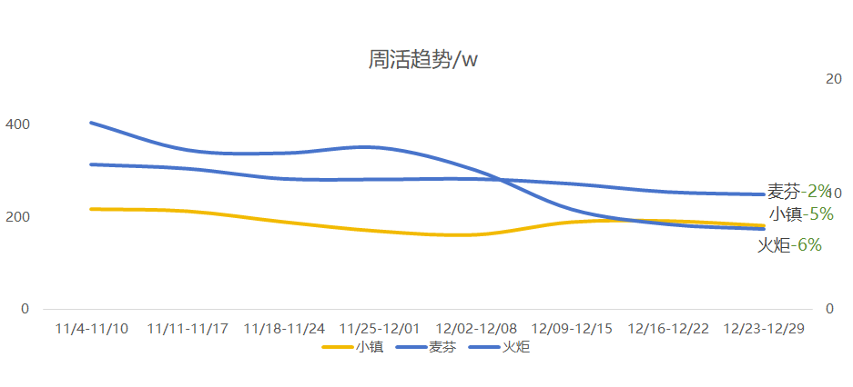
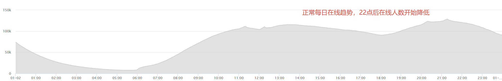
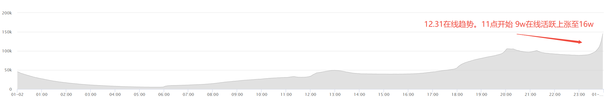
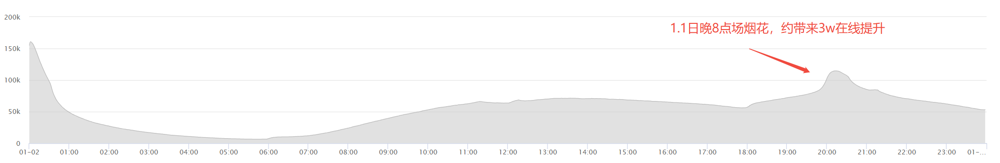
📎 原文：第二十四周周报
W25 原文（2024.12.30-01.05）
1.1 日 0 点烟花拉动实时在线 7.7w 提升，20 点场烟花拉动实时在线 4w 提升
新年两天周回流用户活跃 20.5w 人。其中 11w 周回流用户本周仅在烟花时段回流登录，占比 25%
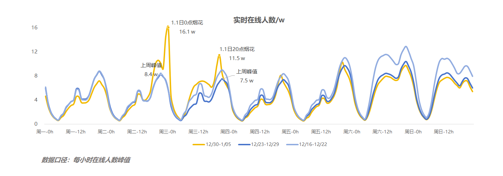
📎 原文：第二十五周周报
📌 mkk 评语
烟花是"零成本拉活"的经典案例——跨年烟花带来 7-7.7w 实时在线提升，且 25% 的周回流用户(11w)仅在烟花时段登录。这证明节日仪式感活动能有效触发"来看一眼"型回流，但转化为持续活跃需要更多内容承接。0 点场(7w)效果约为 20 点场(3-4w)的 2 倍，时间选择很重要。
C21. 假期效应 & 外部事件影响
追踪范围：W26 → W85 | 当前状态：持续跟踪中
W26 原文（2025.01.06-01.12）— 寒假回流
1.1左右跨年烟花用户回流增加 → 玩家年底忙于考试/工作回流减少 → 1.10寒假开始玩家回流增多
观察指标7日回流玩家数，从大约1.10日开始至今累计约回流约20w用户
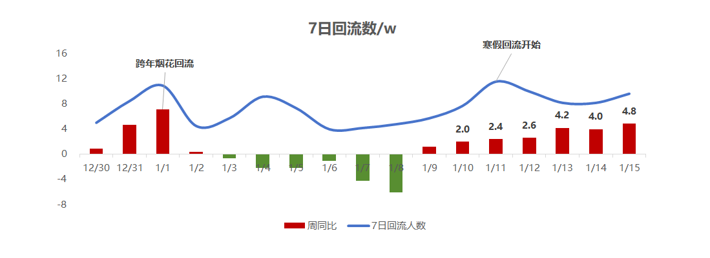
📎 原文：第二十六周周报
W28-29 原文（2025.01.20-02.02）— 春节版更回流
春节版更首周7日回流玩家数67w，回流用户占比32%，持平小狗&下雪版本；回流用户周留存率53%，且中度和重度用户占比高于小狗版本
春节第二周和第三周回流玩家数量和占比有所下降，但活跃度和留存仍然较高于小狗版本
回流用户数在1.18日达到高峰，后续数量下降至每日10w左右
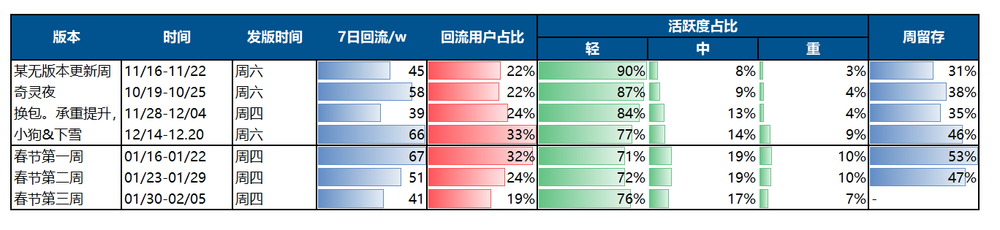
📎 原文：第二十八&九周周报
📌 mkk 评语
W26 寒假回流（约20w）为春节版本做了"蓄水"，W28-29 春节版更则带来67w回流用户（占比32%，持平小狗版本）。值得注意的是，春节回流用户的质量优于小狗版本——中重度用户占比更高，且第二、三周的活跃度和留存仍高于小狗同期。这说明春节版本的内容丰富度（卡池+BP+贴纸+雪雕+微观家园）比单一联动（小狗）对回流用户的承接更好。回流高峰在1.18日（版更后2天），之后稳定在日均10w，衰减曲线比较平缓。
C28 清明假期效应
W38 清明假期活跃回升
清明假期活跃回升，期间更新奶油大卡池、小BP。周活跃 169w（+18%），日均活跃 83w（+22%）。整体用户日均时长继续提升至57min（+6min）。
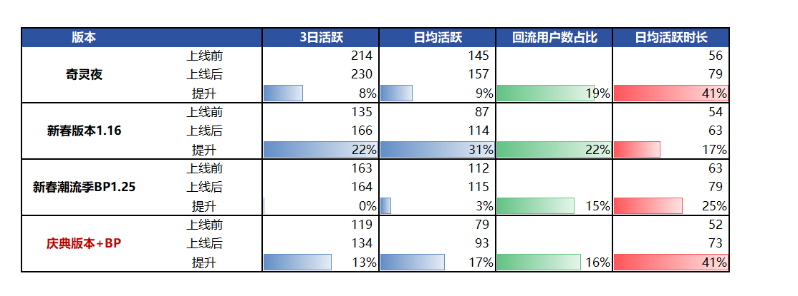
📎 原文：第三十八周周报
📌 mkk: W35触底(WAU 146w)后，清明假期+版更双重叠加将WAU拉回169w(+18%)。这个回升幅度与春节后衰减的幅度(188→146，-22%)高度对称，说明假期是核心活跃驱动力。真正的基线需要看假期后能否稳住——W39-40的175-176w说明版更内容（养狗+BP）帮助锁住了假期带来的增量，这是好信号。
W41-42 五一假期效应
五一假期玩家回流，活跃回升。周活 189w（+25%），日均活跃 94w（+22%）
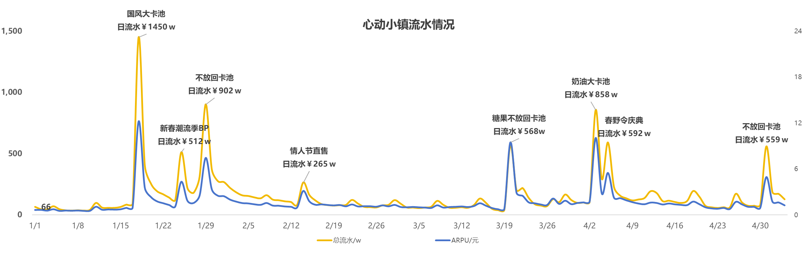
📎 原文：第四十一&四十二周周报
📌 mkk: 五一假期带来25%的周活提升，假期效应依然是小镇最强的自然增长驱动力。对比端午（W46仅+8%），五一的拉动力约为端午的3倍，可能与假期长度和时间节点有关。
W45 期末考试季
临近期末考试季，活跃稍有下降，周活 150w（-4%），日均活跃 74w（-2%）
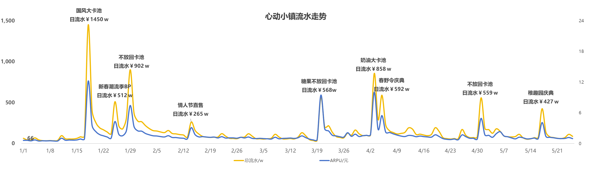
📎 原文：第四十五周周报
📌 mkk: 考试季对小镇活跃的负面影响约-4%，幅度不大但方向明确——印证了小镇用户群体中学生占比较高的特征。这是一个可预测的年度周期性低谷。
W46 端午假期
端午假期活跃小幅回升，周活 162w（+8%），日均活跃 75w（0%）
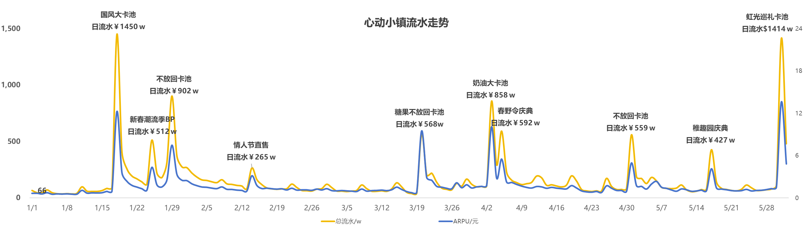
📎 原文：第四十六周周报
📌 mkk: 端午3天假期的拉动效果（+8% WAU）远弱于五一7天（+25%），符合假期长度与活跃增幅正相关的规律。
W53 竞品——米姆米姆哈
米姆米姆哈上线，目前今日实时在线相比昨天降低约1.1w（-6.7%），影响不大
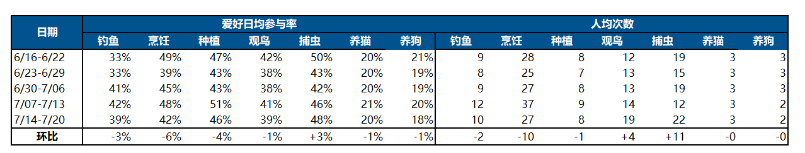
📎 原文：第五十三周周报
📌 mkk: 1.1w的分流对于日活百万级的小镇来说确实影响有限（约1%）。不过这只是上线首日数据，需要持续观察是否存在延迟影响。小镇在周年庆期间的内容丰富度和IP联动构成了天然的防御壁垒。
W59 假期DAU对比(暑假/寒假跨期)
对比小镇24暑假，25寒假，25暑假三次假期的DAU趋势。开学相比假期均值降幅：24暑假为-53%，25寒假-38%，25暑假-47%；香肠派对25暑假-58%。
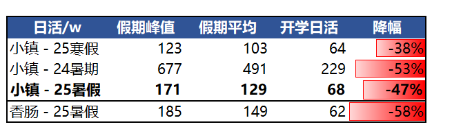
📎 原文：第五十九周周报
📌 mkk: 25暑假的开学降幅(-47%)好于24暑假(-53%)但差于25寒假(-38%)——寒假衰减最小可能因为春节+寒假重叠提供了持续拉力。与香肠对比(-58%)，小镇的假期依赖度稍低，但仍是学生群体特征明显的产品。
W60 不放回卡池回流效应
不放回双卡池9.4日上线，回流人数5w，当日DAU回升至73w（环比+23%）。
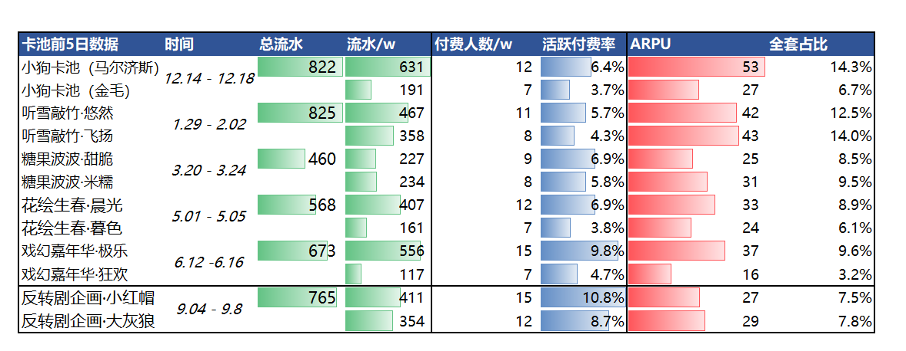
📎 原文：第六十周周报
📌 mkk: 单日回流5w+DAU回升23%是非常显著的内容驱动回流效果，不放回卡池的"事件属性"强于常规卡池。
W67 活跃数据对比香肠(假后回落)
近期小镇活跃有所下滑，对比香肠同期数据观察：
周活跃：小镇在国庆期间的活跃回升的幅度比香肠小，假期后回落的幅度也比香肠小，整体趋势接近但小镇低于国庆前水平。
在线时长：小镇在国庆期间，在线时长上涨幅度比香肠大，假期后回落的幅度也大，且目前日均在线时长仅39min，已经显著低于假期前的50min；建议考虑是否调整游戏新内容释放节奏，更加均衡舒缓，保证玩家的新鲜感。
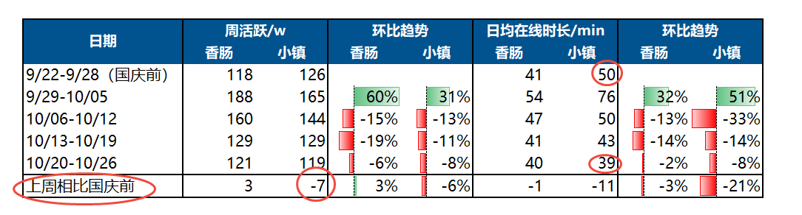
📎 原文：第六十七周周报
📌 mkk: "活跃回升小但回落也小"说明小镇的核心用户更稳定，但缺乏像香肠那样的弹性。时长从50min→39min(-22%)的断崖式下跌是关键预警——这不是正常的假后回落，而是内容真空导致的深度下滑。原文建议"均衡舒缓释放节奏"切中要害。
W68 海外测试首日
新增设备共9.8w，其中89%为安卓，7%为iOS，4%为PC官网。设备到账号转化率70%。
人数最多的服为东南亚，占比25%；人数最少的是南美服。东南亚和日服日均时长98min，欧服日均时长最短，仅69min。
人数最多的Top5国家/地区为：泰国，韩国，台湾，美国，印尼。活跃时长Top5：日本，印尼，新加坡，台湾，泰国。
约有40%的玩家还是停留在1级。到达3级的玩家占比42%，到达5级的玩家占比11%。
新手漏斗单步折损明显的步骤有：到达等级5（需要强活跃积累），维修钓鱼竿教程（可能翻译卡点），园艺教程完成（需要等待），摆放家具教程（可能翻译问题）。
巴西游玩中Ping值250-500的分布占比达到40%，存在明显网络卡顿情况。
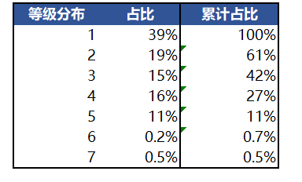
📎 原文：第六十八周周报
📌 mkk: 首日9.8w设备以安卓为主(89%)符合海外休闲游戏分布。东南亚/日本的高时长(98min)说明这些地区有强需求匹配。40%停留在1级+新手漏斗多处折损是紧急问题——翻译质量和等待机制需要优先优化。巴西40%高延迟直接影响体验，南美服务器部署需提上日程。
W75 圣诞好礼速递
玩家前往小镇中心圣诞树互动领取礼物（动作，服装资产），共6个。难度较低，纯打卡。前3日参与率83%。
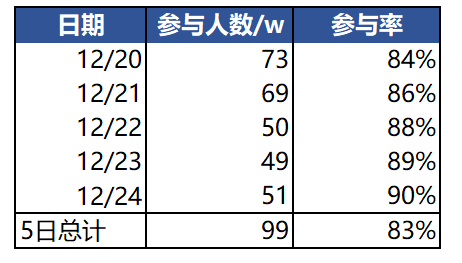
📎 原文：第七十五周周报
📌 mkk: 83%的参与率证明"低门槛+免费奖励+节日主题"是参与率天花板级别的组合。纯打卡模式虽然没有付费转化但对留存有托底作用。
W76 圣诞运营活动
圣诞好礼速递：活动参与率82%，大部分玩家前6日就已经拿到了6个资产，因此活动后期参与率下降。
圣诞心礼&协会福利：玩家可以通过圣诞礼物堆与其他玩家交换圣诞礼物，并领取协会福利200蓝钻。约60%的活跃玩家领取了200蓝钻圣诞福利。
圣诞商店：玩家完成活跃任务获得圣诞限定货币购买限定资产。消费圣诞活跃代币的参与率较低（尤其前5日）。分日拆解圣诞活跃代币产销情况，整体产销比56%属于尚可水平。主要是玩家前期在积累代币，可能还不足购买想要的商品。
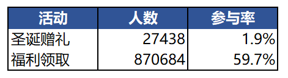
📎 原文：第七十六周周报
📌 mkk: 圣诞三线活动的参与率梯度很清晰：打卡(82%) > 领蓝钻(60%) > 消费代币(低)。玩家对"免费拿"高度积极，对"需要积累才能消费"的耐心有限。代币产销比56%与此前蓝钻产销比的问题类似——消耗出口吸引力不够。前期积累期参与低说明商品展示/目标感不足，玩家不知道"攒了能换什么好东西"。
W77 元旦烟花&回流
新年烟花大会：2026年1月1日-3日；其中1月1日0:00-0:30、20:00-20:30（0点前半分钟开启倒计时），1月2日-3日20:00-20:30。
实时在线：0点新年烟花实时在线人数10w，同比增长5w；1.1晚8点烟花实时在线人数7.6w。
回流提升：元旦3日回流用户总计19.3w，其中0.5w用户仅在烟花时段登录。说明大部分回流用户不仅仅观看了烟花。
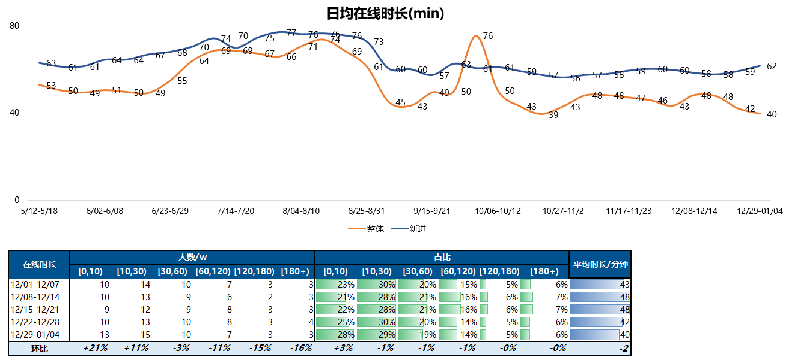
📎 原文：第七十七周周报
📌 mkk: 对比25年烟花数据(W24-25记录)，26年0点在线10w比去年增长5w(+100%)，增势强劲。更有价值的发现是"仅0.5w用户只看烟花就走"——97%的回流用户在烟花之外也有其他活跃行为，说明烟花作为回流触点后，春节内容（大卡池/BP预热）提供了有效的留存承接。
W83-84 春节数据对比25年
除夕-初六7日春节整体数据对比去年如下，主要原因是BP和卡池上线比去年早：
活跃：去年BP上线较晚（大年初一正式开），今年春节后期新内容释放不足，因此整体活跃稍低于去年。
付费：由于通票补偿后玩家存量较多，因此喜羊羊流水受到影响，导致今年春节后期付费流水不如去年。
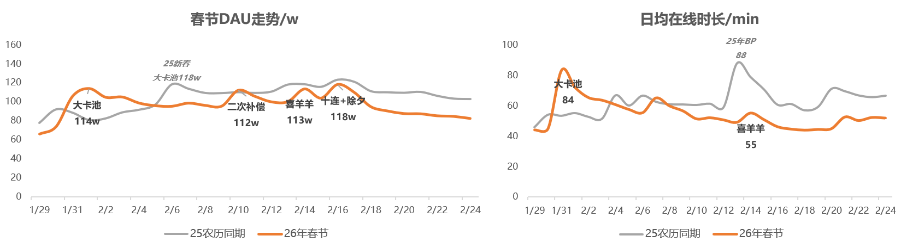
📎 原文：第八十三&八十四周周报
📌 mkk: 今年春节的"前高后低"特征非常明显——大卡池+BP提前上线制造了更高的起点，但后续内容释放不足+通票补偿透支消费力，导致春节后半程(除夕后)被去年反超。节奏上的教训是"集中上线 vs 分散上线"需要根据内容储备量来决策：内容充足时分散更好，内容不足时集中至少能保证一波高点。
W85 春节活跃趋势对比（香肠派对）
小镇26年春节期间日活上涨33%（小镇25年为28%，香肠26年为29%）
小镇26年节后日活回落，日活-17%（小镇25年为-10%，香肠26年 -15%）

📎 原文：第八十五周周报
📌 mkk: 三方对比的结论很清晰：小镇在春节期间的拉升能力最强(33%>29%>28%)，但回落也最剧烈(-17%<-15%<-10%)。这进一步验证了小镇用户画像——以学生为主的泛用户群体，假期效应更显著但假期结束后流失也更快。香肠作为同类产品回落-15%是合理参照系，小镇多出的2pp回落可能与前述内容消耗过快有关。